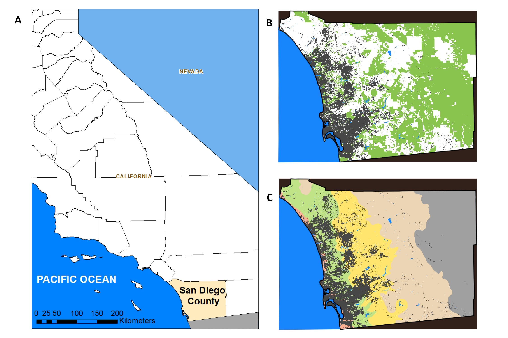
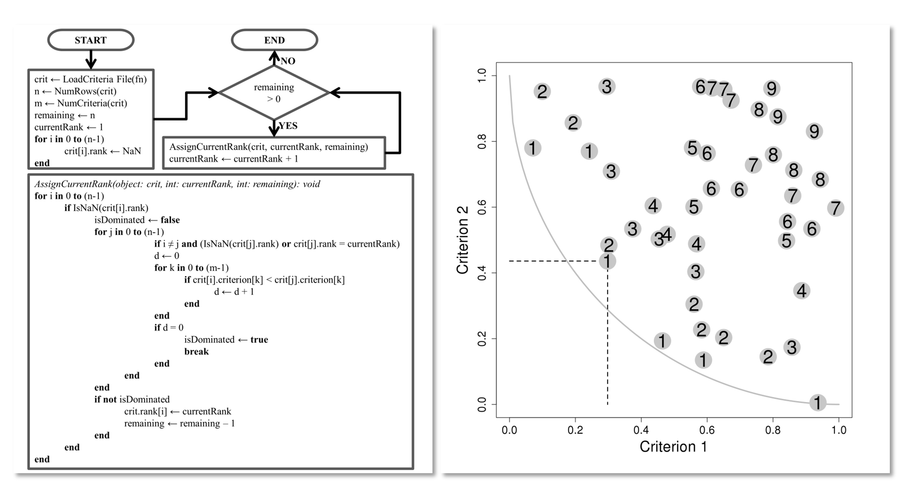
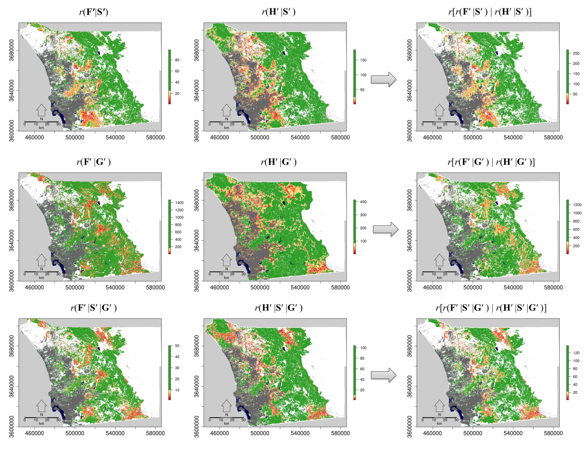
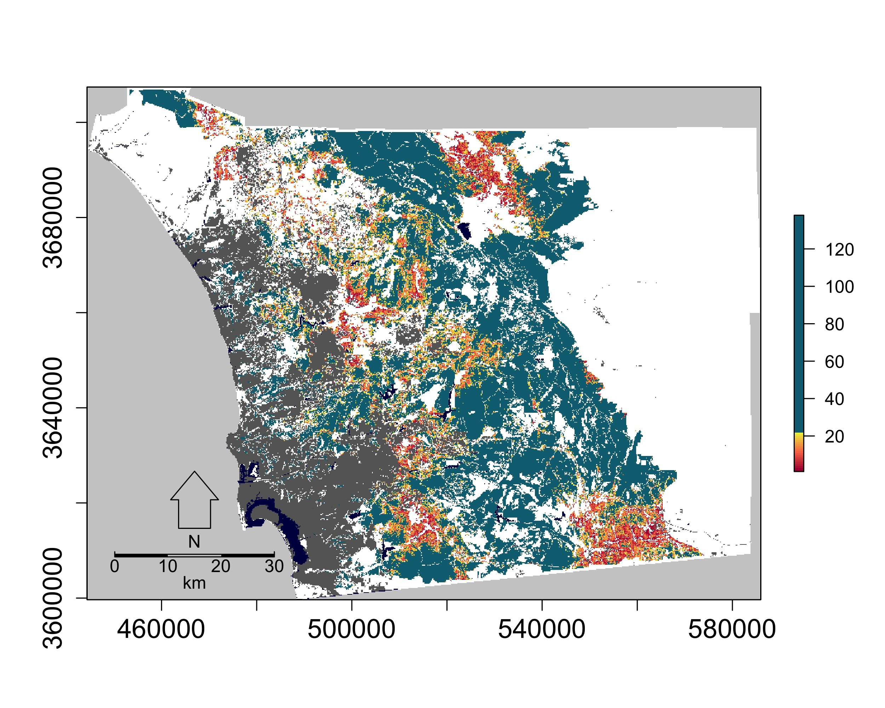

The Cognavitron — hover for details · click to navigate
Fire, Fragmentation, and Conservation Prioritization
conservation-planning
fire-ecology
spatial-analysis
landscape-ecology
Spatial prioritization of conserved areas threatened by wildfire and urban fragmentation in coastal southern California. Integrating fire risk, biodiversity, and landscape connectivity to identify monitoring and management priorities.
The Problem
San Diego County is a global biodiversity hotspot — one of the most species-rich and endemic-laden regions in North America — and it is also one of the most threatened. The combination of urban expansion, a fragmented landscape of conserved lands surrounded by development, and an intensifying fire regime driven by climate change creates overlapping threats that no single analysis could adequately capture. Conserved areas face different combinations of these pressures, and with limited resources for monitoring and management, knowing where to focus becomes a genuinely hard problem.
The question I set out to address, with my co-authors, was: how do you prioritize conserved areas when the threats are multiple, the ecological values are multiple, and no single criterion dominates? Traditional approaches to spatial prioritization rank sites on a single score, which requires weighting incommensurable criteria against each other — a choice that is both scientifically arbitrary and politically loaded. We took a different approach.
Study Area
The study focused on conserved lands within San Diego County — national forests, national wildlife refuges, state parks, reserves, and privately conserved areas. The county spans a strong climate gradient from the Pacific coast eastward through chaparral and oak woodland into desert, and the conserved areas are distributed unevenly across these zones.

The Approach
The core methodological contribution of this work is the application of Pareto ranking to spatial conservation prioritization. Pareto ranking comes from multi-objective optimization: a solution A dominates solution B if A is at least as good as B on every criterion and strictly better on at least one. Solutions that are not dominated by any other solution form the Pareto front — the set of efficient trade-offs. By iteratively removing Pareto fronts, you assign every spatial unit a rank: rank 1 is the undominated set (highest priority), rank 2 is undominated after rank 1 is removed, and so on.
The approach works on five categories of criteria:
- Fire threat — number of historical fires, ignition probability, and fire return interval departure (FRID), a measure of how much fire frequency has deviated from its historical range
- Fragmentation threat — road density, development density, and habitat patch area
- Species richness — species distribution models (SDMs) combined across plants, herpetofauna, birds, and mammals
- Genetic diversity — within-population diversity for a panel of focal species
- Genetic divergence — between-population divergence, reflecting evolutionary distinctiveness
The method avoids the need to weight criteria against each other. Instead, it identifies which conserved areas are most threatened across the most criteria simultaneously.

I wrote the Pareto ranking code in R and it is publicly available (see below). The SDMs were developed by co-authors with expertise in each taxon group; the genetic data came from the UC Berkeley Museum of Vertebrate Zoology and co-authors at the USGS Western Ecological Research Center. The full analysis ran across roughly 50m grid cells covering the conserved land network of the county.
Results
The spatial prioritization revealed a clear pattern: the highest-priority conserved areas — those in the first few Pareto ranks — are concentrated along the eastern edge of the urban footprint, in the coastal and transitional climate zones. These are the areas where fire threat, fragmentation pressure, species richness, and genetic diversity coincide. They are also the areas under the most active development pressure.

Breaking the results down by criterion combination shows that fire and fragmentation threats, on their own, are distributed differently than when biodiversity criteria are included. Adding genetic data shifts priority toward areas that would be overlooked by a species richness-only analysis — places with high evolutionary distinctiveness that are not necessarily the most species-rich.

The practical output is a ranked list of conserved areas that can directly inform monitoring resource allocation — field crews, camera traps, acoustic sensors — and management intervention priorities.
Code
The Pareto ranking code used for spatial conservation prioritization is publicly available on GitHub:
github.com/Jeff-Tracey/pareto-ranking
Papers
Tracey JA, Rochester CJ, Hathaway SA, Preston KL, Syphard AD, Vandergast AG, Diffendorfer JE, Franklin J, MacKenzie JB, Oberbauer TA, et al. (2018). Prioritizing conserved areas threatened by wildfire and fragmentation for monitoring and management. PLoS ONE 13(9): e0200203. https://doi.org/10.1371/journal.pone.0200203
Syphard AD, Butsic V, Bar-Massada A, Keeley JE, Tracey JA, Fisher RN (2016). Setting priorities for private land conservation in fire-prone landscapes: Are fire risk reduction and biodiversity conservation competing or compatible objectives? Ecology and Society 21(3): 302. https://doi.org/10.5751/ES-08410-210302